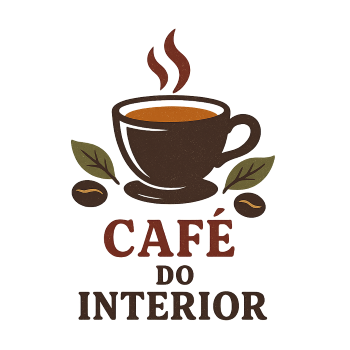

Pazer,Café do interior

Sobre a nossa empresa
- Quem somos?
Café Interno é uma cafeteria com alma literária, que une café artesanal, ambiente acolhedor e cultura. Inspirado nos cafés europeus, é um refúgio para quem busca pausa, leitura, escrita e encontros criativos. Mais que uma bebida, aqui o café é um ritual.
Venha nós conhcer
Cafe para aquecer e livros para se inspirar